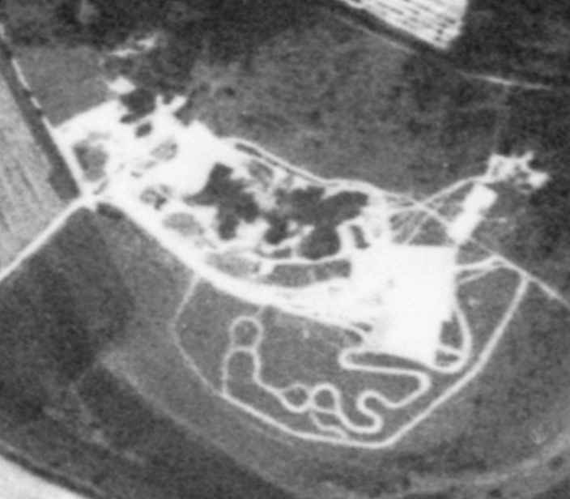
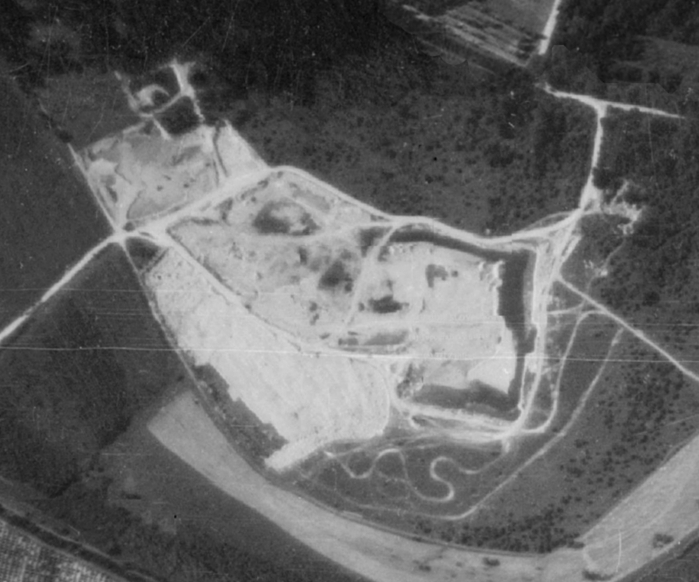
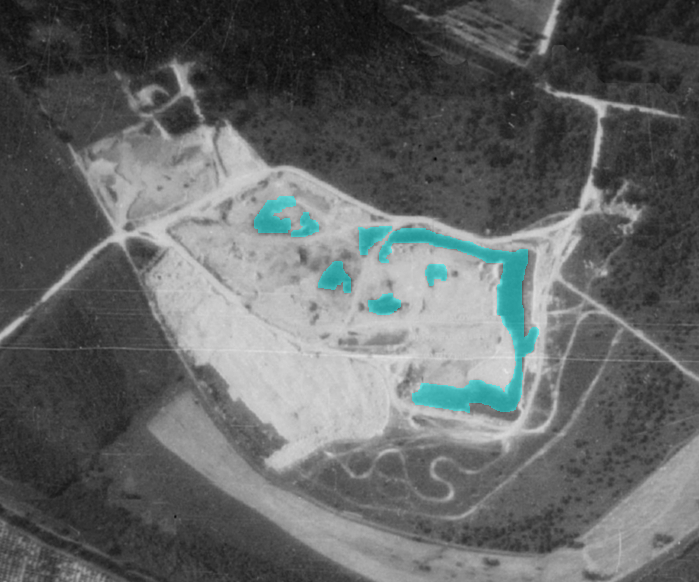
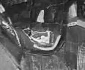
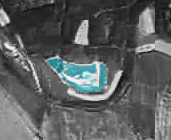
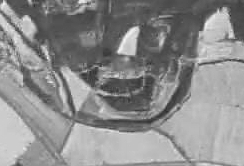
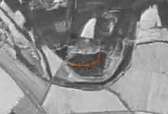
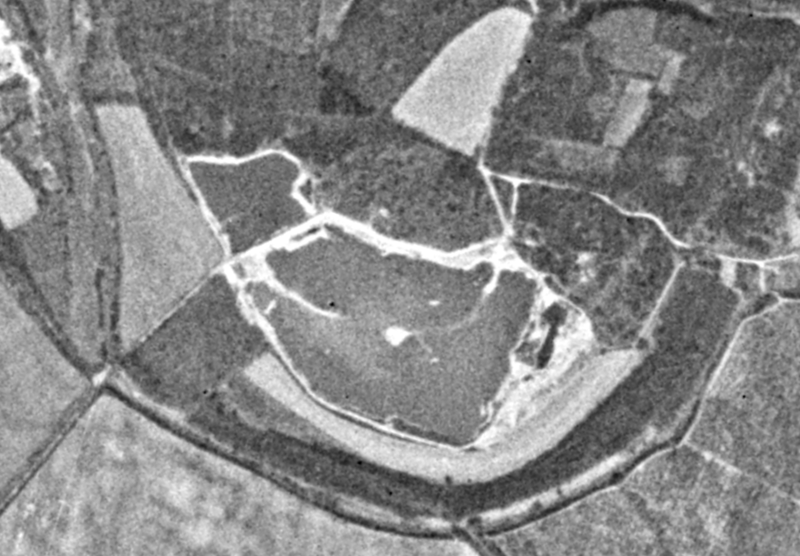
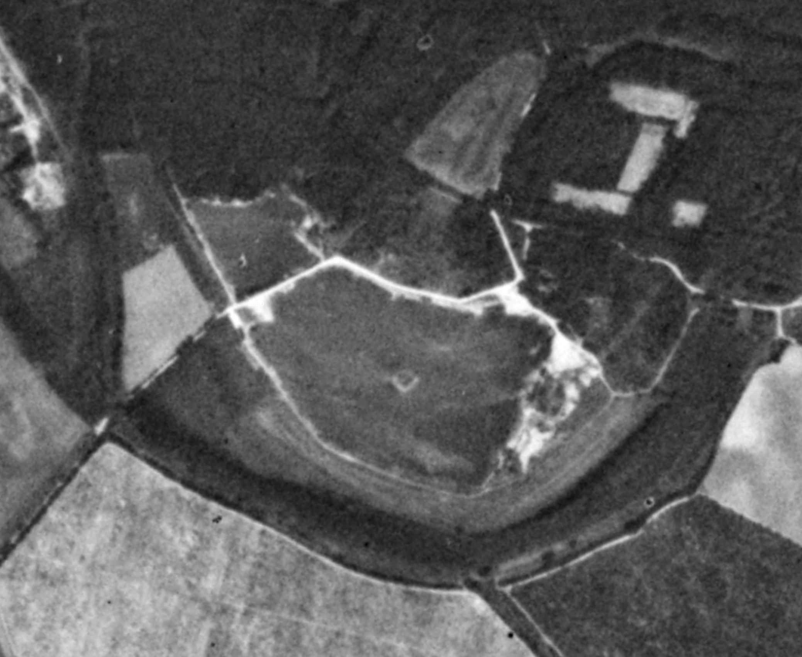

Sú dve - veľké a malé. Fantastické. Čistá voda a rozmanitá príroda na okraji Bratislavy.
Ich problém sú odpadky, invazívne rastliny, znečisťovanie vody alebo degradovanie okolitého územia.
Jazerá navštevujú aj fantastickí ľudia. Sú to tí, ktorí prispievajú k ich ochrane.
Vďaka nim môžu ostať také nádherné aké sú - prírodné.
Na tejto stránke sa s vami chcem podeliť o zaujímavé informácie, ktoré sa mi podarilo vyhľadať.
Sú tu aj moje príspevky z facebookovej stránky:
Čunovské Jazerá Bez Odpadkov
Čo všetko tu môžete nájsť :
- v menu HISTÓRIA sa dozviete ako vznikli Čunovské jazerá a čo bolo na ich mieste predtým.
- ak si chcete prečítať, pozrieť alebo vypočuť články alebo reportáže o jazerách navštívte menu UVEREJNILI, sú tu chronologicky zoradené články od rôznych autorov.
- v menu ODPADKY si môžete pozrieť, odpadky vyzbierané na jazerách v jednotlivé roky v lepšej kvalite ako na Facebooku. Dozviete sa tu aj prečo som začal zbierať odpadky.
- menu OCHRANA je rozdelená na dve časti:
- ochrana VODY - môžete si tu pozrieť, aké ochranné pásma platili v oblasti jazier, ich história, zákazy a povolenia kúpania, zákony, mapu pásiem...
- ochrana PRÍRODY - dozviete sa tu aká príroda je okolí jazier, prečo je chránená, história ochrany, mapy, zákony...
- menu MAPY zahŕňa dve podobné interaktívne mapy ochranných pásiem prírody a jednu mapu s ochrannými pásmami vody.
- v submenu VZNIK je interaktívny porovnávač historyckých ortofoto a satelitných snímkov vzniku jazier + mapa z 50-tych rokov
Ťažiť štrk v oblasti dnešných jazier sa začal v šesdesiatych rokoch 20-teho storočia na miestach, kde štrkopiesky dosahovali najhrubšiu vrstvu.
Čiernobiela letecká snímka z decembra roku 1961 zachytáva tento začiatok.
Farebne vyznačené sú miesta kde sa začala ťažba a obrys Čunovských jazier dnes
V 60-tych rokoch ťažba štrku pokračovala ale jazerá tu ešte stále nevznikli. V rokoch 1967 a 1969 územie vyzeralo takto:
Farebne sú vyznačené priesaky podzemnej vody
|  |
|  |  |
Až v 70-tých rokoch tu postupne začali vznikať vodné plochy. V októbri 1972 a v auguste 1973 sa už začali črtať jazerá:
 Malé jazero, južná a severná časť veľkého jazera boli postupne vybágrovné a zaplavené. Iba sted jazera tam kde je dnes ostrov nebol ešte zaplavený a zo začiatku jazera tu viedol poloostrov, ktorý sa postupne zmenšoval (na snímke z decembra 1973).
 Jazero sa ďalej bágrovalo a v marci 1978 už bol tento poloostrov takmer odstránený, črtal sa už aj vzniknutý ostrov.
A v auguste 1980 má jazero vpodstate už dnešný tvar. Polostrov úplne zanikol a je vidno iba ostrov v strede veľkého jazera. Východná časť jazera ostala stále rozbágrovaná.

V nasledujúcich rokoch sa jazero ďalej upravovalo a neskôr po ukončení ťažby štrku, sa na jeho brehy vracia aj príroda.
Postupným bágrovaním jazier vznikli na jazere rôzne plytčiny a priehlbiny, ktoré pri pohľade z výšky vytvárajú nádherné rebrovanie jazier.
Je to vidno hlavne na veľkom jazere. Na satelitnej snímke z roku 2014 sa to dá pekne pozorovať. Všimnite si aj pozostatok polostrova o ktorom
som písal vyššie.